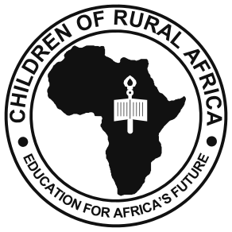

Our vision

Who we are
Twenty years of building schools where there were none.
CORAfrica is a development agency with 501(c)(3) status in the United States and operations across rural Nigeria. We believe a child’s education is inseparable from their health, their food and their family’s income — so we build all four.
Our mission
To change the face of education and healthcare for indigent children in Africa, one community at a time.

Our logo
The map, and the light.
The seal carries the map of Africa and a torch. The torch stands for the Light our programmes are meant to bring — the conviction that education is what changes a continent’s prospects, one community at a time. The ring around it carries our name and our promise: Helping Children and Communities Thrive.
Our history
From a doctorate to a network of schools.
2006
Conceived at Cornell
Fr. Peter Obele Abue, completing a PhD in International Development at Cornell University, sets out to close the gap he had watched open between the developed and the developing world.
2006
Incorporated in the United States
CORAfrica is granted 501(c)(3) non-profit status, with a founding Board of Trustees of Bruno Schickel, Royal Colle, Thomas Lickona and Carolann Darling. Building begins in Nigeria that same year.
2009
Fr. Peter returns to Nigeria
Empowerment programmes and projects follow across the Diocese of Ogoja — St. Joseph’s Primary and Secondary School, the Sr. Augustina Abuo Medical Clinic, Little Flower School at Ipong-Obudu.
2010
Registered in Nigeria
CORAfrica is incorporated under the Companies and Allied Matters Act on 6 September 2010 as a Registered Trustee of an NGO, certificate CAC/IT/NO 40479 — giving the work a legal footing in both countries it operates in.
2010s
A second board, from Western Pennsylvania
Ray Ferguson, Fr. Jim Murphy, Anne Goetler, Tom Rooney, Jeannine Goetz and Ethan Suquet join. With Abode for Children Inc. of Evans City, led by Tom and Mary Rutkoski, they upgrade St. Joseph’s Schools and Orphanage and CORAfrica Farms.
2020
John Bosco Academy
Founded at Adagom, Ogoja, to reach the influx of refugee children arriving from Cameroon with no access to basic education.
2021
The John Stilley Schools
Founded at Victoria, Ikom, where no secondary school existed. St. Peter’s Primary is registered at Adagom 3. John Stilley and his family have given time, funds and energy to make these projects last.
Today
Two states, and a model that travels
Headquartered in Abuja, CORAfrica works across Cross River and Benue States, reaching rural communities, IDP camps and refugee settlements.
Our philosophy
Three convictions we build on.
CORAfrica’s philosophy is rooted in Catholic Social Teaching, and reduces to three core values that govern how we choose projects and how we hand them on.
Dignity of the human person
Each person — each child — has an inalienable dignity, and should be treated as an end and never only as a means. Every child deserves the chance to achieve their dreams, no matter where they were born.
Solidarity and the common good
Faced with globalisation and the growing interdependence of peoples, the universal human family remains one. We are obliged to increase our sensitivity toward children, especially those who suffer deprivation.
Self-reliance
We look for the explicit ways a community or institution can design its structures so that children and young people become independent — rather than relying permanently on outside intervention.
Accountability
Registered, audited, and on the record.
We are a registered charity in both countries we work in, our books are audited annually by an independent firm, and our accounts are available to funders on request.
Registered in Nigeria
Incorporated under the Companies and Allied Matters Act on 6 September 2010 as a Registered Trustee of an NGO. Certificate CAC/IT/NO 40479.
Registered in the United States
A 501(c)(3) non-profit, so gifts from US taxpayers are tax-deductible. EIN [REQUEST FROM FR. PETER].
Independently audited
Our financial statements are audited by Akomaye Adie & Co., Chartered Accountants and Tax Practitioners, of Calabar.
92.6% to programmes
Of everything CORAfrica spent in the year ended 31 December 2025, 92.6% went to schools, clinics, farms and loan funds. Overheads were 7.4%.
Assets we hold
Land, school buildings and a farm and agricultural station, carried in the 2025 accounts at ₦180.5 million.
Governed by trustees
A Board of Trustees oversees the organisation, with operations directed from Ogoja in Cross River State.